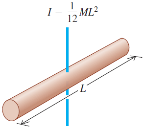

Una barra de largo \(L\) y masa \(M_B\), se encuentra unida al extremo de una golilla de radio interno \(r\), radio externo \(R\), masa \(M_G\) y espesor despreciable. Usted consta de dos sistemas de péndulo, uno que oscila de frente a usted (esquema 1), que no siente el roce, y otro que oscila de costado a usted (esquema 2), que siente el roce del aire solo en la golilla. Ambos péndulos tienen unido a su extremo dos resortes de constantes elásticas \(k_1\) y \(k_2\), tal como muestra la figura. Usted debe determinar la potencia promedio de una fuerza armónica externa resonante al sistema, aplicada en el centro de la golilla para el sistema 2.

- Determine el momento de inercia respecto al pivote del péndulo físico para ambos sistemas \(I_1\) e \(I_2\), en términos de \(M_B\), \(M_G\), \(R\), \(r\) y \(L\). Los momentos de inercia para un disco de masa \(M\) y radio \(R\) y para una barra de masa \(M\) y largo \(L\) son:

- Determine la frecuencia angular \(\omega_{01}\) para el primer péndulo, que no siente roce, en términos de las variables del problema.
- Usted se da cuenta que la frecuencia angular para el segundo péndulo es igual que la frecuencia natural del primero, \(\omega_2 = \omega_{01}\). Determine el valor de la constante \(b\) de la fuerza de roce \(\vec{f}_r=-b\dot{\vec{x}}\) para el segundo péndulo, considerando que actúa en el centro de la golilla. Entregue su resultado en términos de \(I_1\), \(I_2\), \(k_1\), \(k_2\), \(M_G\), \(M_B\), \(R\), \(r\) y \(L\).
\fbox{Ayuda: \(\omega_2 = \sqrt{\omega_{02}^2 - \gamma^2}\)}
- ¿Cuánto sería la potencia promedio \(\bar{P}\), de una fuerza armónica externa resonante con el sistema, \(\vec{F}_0 \cos(\Omega_R t)\), si actúa en el centro de la golilla?
\begin{equation*} (T \equiv \text{periodo})\end{equation*}
\fbox{Ayuda: \(\sin(a \pm b) = \sin (a) \cos(b) \pm \cos (a) \sin (b)\)}
\fbox{Ayuda: \(\phi_2 = \arctan \left( \dfrac{2 \gamma \Omega }{\Omega^2 - \omega_0^2} \right)\)}